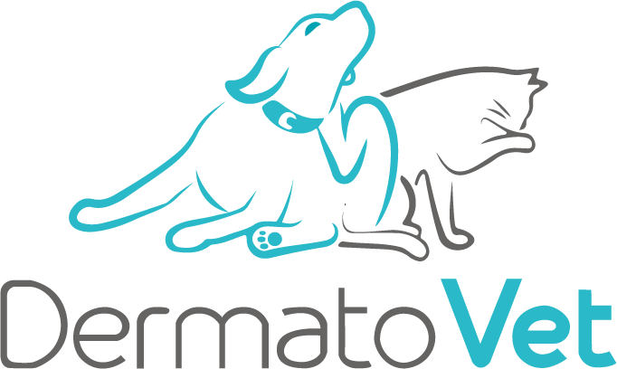
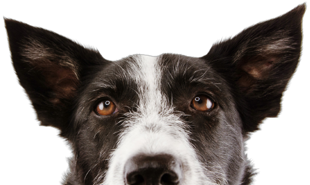

NOSOTROS
Más de 10 años brindando bienestar dermatológico a los engreídos de casa.
Abrimos nuetsras puertas en el 2012, siendo el primer centro veterinario dedicado única y exclusivamente a
dermatología animal en el Perú.


Dra. Vanessa Llerena
CMVP 5437
- Graduada como Médico Veterinario en 2004, (Universidad Alas Peruanas).
- Pasantías: Dermatología veterinaria en University of Florida. Medicina Interna en Cornell University,
Ithaca (USA). Dermatoclínica Sao Paulo, Brasil.
- Especialidad en Dermatología Veterinaria en el Centro de Especialidades Médicas Veterinarias en Buenos
Aires, Argentina.
- Miembro efectivo de la Sociedad Latinoamericana de Dermatología Veterinaria (SLDV).
- Miembro fundador de la Asociación Peruana de Dermatología Veterinaria.
- Participante y ponente en congresos Internacionales de Dermatología y medicina Veterinaria.